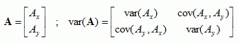
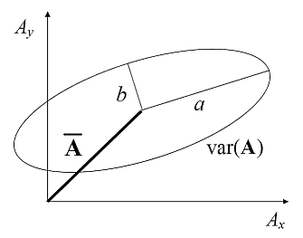
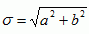
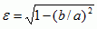

Ellipse Representation of Variance of 2D Vectors
(Koh and Ng, 2009)
The variance of a 2D vector A, e.g., horizontal wind, is a 2x2 matrix:

It can be represented schematically by a “variance ellipse”, with semi-major and semi-minor axes equal to the square root of the eigenvalues of the matrix, a2 and b2, and oriented in the direction of the eigenvectors.

In the figure above the mean is shown as a bold line and the variance as an ellipse.
The variance ellipses of modeled and observed wind may be compared by computing for each ellipse:
· standard deviation, ;
· eccentricity,;
· orientation, θ (in radians), of the major axis.
The discrepancy between the modeled and observed wind is a vector itself and its variance ellipse (dubbed “error ellipse”) can be similarly studied.
Answers the questions: How does the vector random fluctuations of the modeled vector compare with those of the observed vector? How does the vector error between the model and observation vary about the mean vector error (i.e. bias)?
Range: σ ∈ [0,∞), ε ∈ [0,1], θ ∈ [0,π) Perfect Score: for a vector error σ = 0, ε = 0
Characteristics: The representation using an ellipse is possible because the variance matrix is real, positive semi-definite and symmetric, so that the eigenvalues are always real and non-negative and the eigenvectors are always orthogonal. The set of diagnostics (σ,ε,θ) represents the complete set of information regarding the second-order moments of a two-dimensional vector. Note that higher order moments are not captured in this representation.
For the variance ellipse of the modeled or observed wind, σ measures the extent of variability, ε measures the anisotropy in the variations and θ measures the preferred direction of the variation.
For the error ellipse (i.e. forecast minus observation), σ indicates the overall magnitude of the random error. θ is the preferred direction of the vector random error and ε denotes the degree of preference for that direction.
Reference
Koh, T.Y. and J. S. Ng (2009), Improved Diagnostics for NWP Verification in the Tropics, J. Geophys. Res., 114, D12102, doi:10.1029/2008JD011179.
http://www3.ntu.edu.sg/home/kohty/spms/publication.htm
(* In Koh and Ng (2009), β=(b-a)/(b+a) was used to measure the eccentricity of an ellipse, instead of the conventional mathematical definition ε. It is since realized that ε is a more sensitive diagnostic than β and it is recommended to use ε instead of β.)